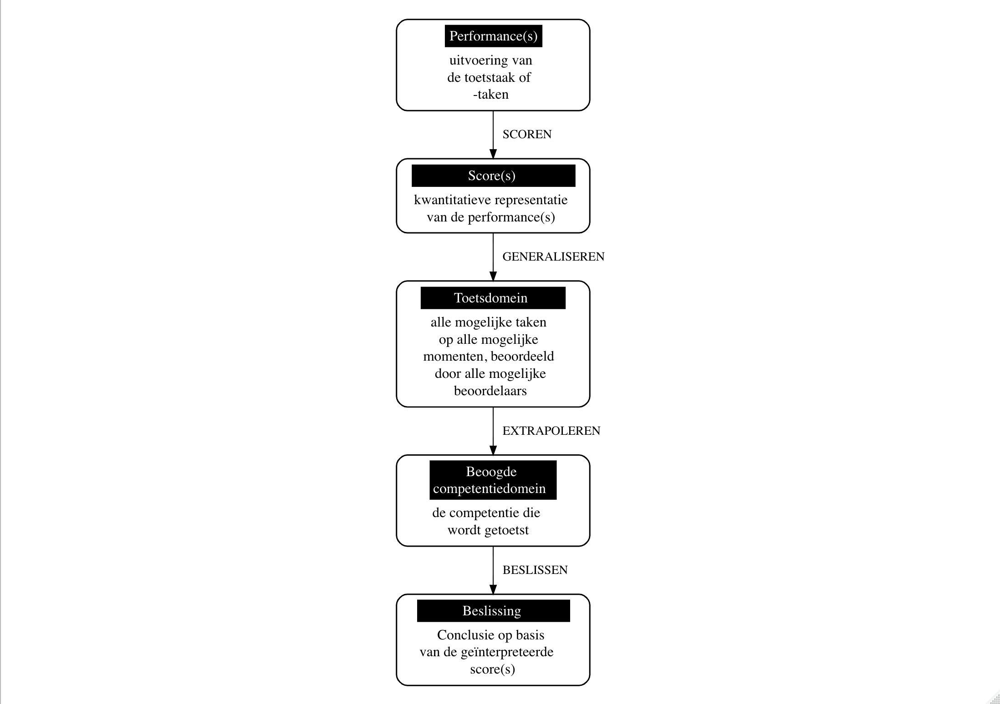
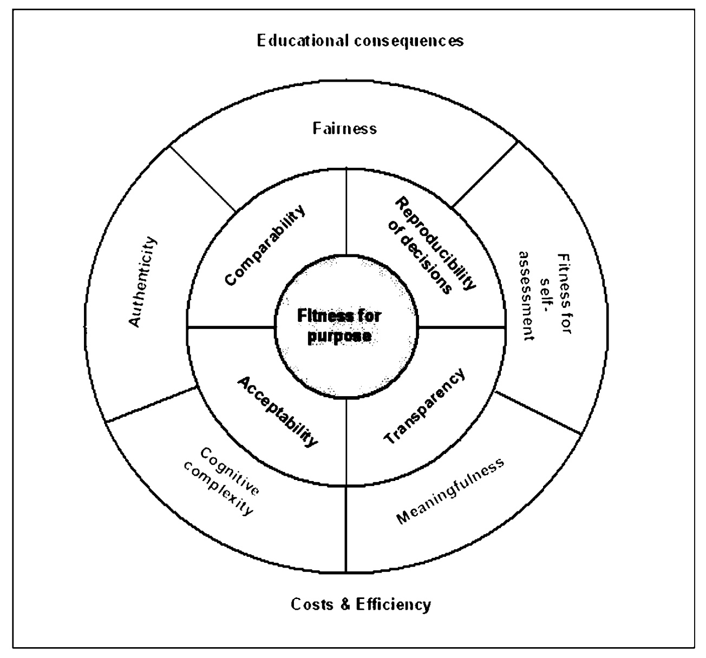
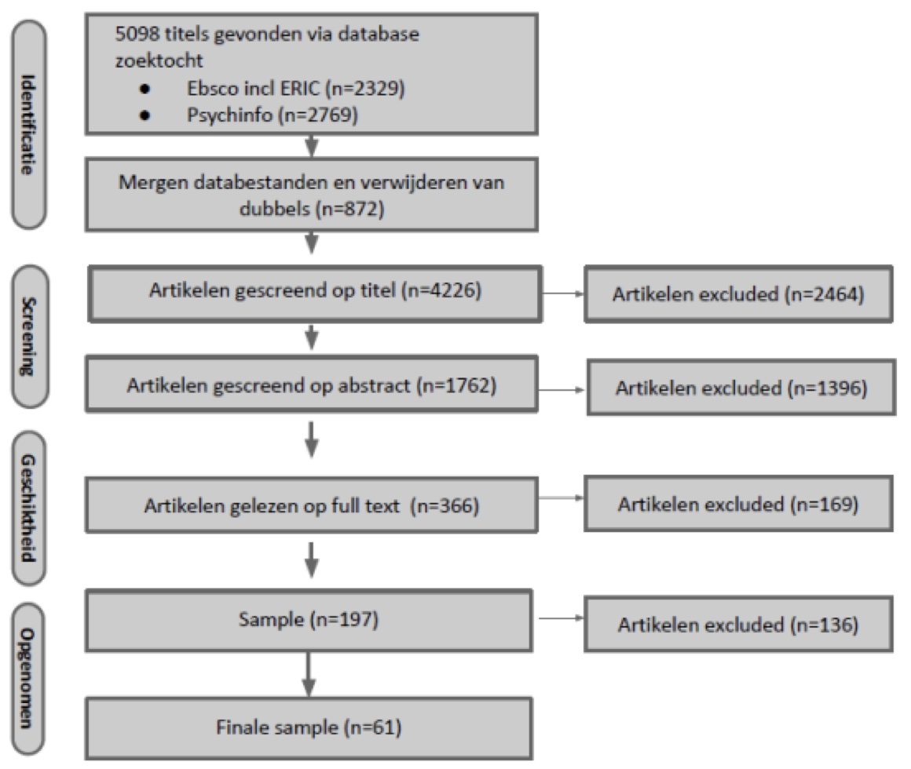

3 Ontwikkeling van de evaluatiematrix
De ontwikkeling van de evaluatiematrix gebeurde in verschillende stappen en iteraties. De argumentatieve benadering van validiteit (Kane, Crooks, and Cohen 1999; M. T. Kane 2013; Kane 2006) vormde de theoretische insteek. Daarnaast werd een literatuurstudie uitgevoerd. De inzichten verkregen uit de argumentatieve benadering van validiteit, door de literatuurstudie en door lectuur van een aantal basiswerken rond ‘performance assessment’, stelden ons in staat steeds preciezer de vinger te leggen op de essentiële onderdelen van een kwaliteitsraamwerk voor (grootschalige) competentietoetsen die gebruik maken van ‘performance assessment’. Ze werden verwerkt in opeenvolgende versies van de evaluatiematrix. Een stuurgroep en expertengroep gaven feedback op de kwaliteit, volledigheid, inzichtelijkheid en bruikbaarheid van de verschillende concepten van de matrix. Vervolgens werd de evaluatiematrix via de analyse van praktijkvoorbeelden en via interviews grondig aan de praktijk getoetst.
3.1 Theoretisch kader
Het theoretisch kader is geïnspireerd op de argumentatieve benadering van validiteit (Kane, Crooks, and Cohen 1999; M. T. Kane 2013; Kane 2006). In wat volgt verduidelijken we eerst waarom we de argumentatieve benadering van validiteit als uitgangspunt hebben gekozen, om vervolgens de kernelementen van deze benadering aan te stippen. Daarna belichten we bij andere auteurs aanknopingspunten die ons geholpen hebben om (1) de argumentatieve benadering te gebruiken voor de ontwikkeling van de evaluatiematrix, en (2) extra kwaliteitseisen met betrekking tot (grootschalige) ‘performance assessment’ te identificeren.
3.1.1 Argumentatieve benadering van validiteit
Om de kwaliteit van toetsen en toetsprogramma’s te evalueren bestaan er verschillende referentiekaders [Baartman (2008); Kane (2006); M. T. Kane (2013); Wools (2015); Wools, Sanders, and Roelofs (2007)]. Vele auteurs (zie o.m. 3.1.2.) schuiven de argumentatieve benadering van validiteit [Kane, Crooks, and Cohen (1999); M. T. Kane (2013); Kane (2006)] naar voor als een generiek toepasbaar en praktisch model om de kwaliteit (i.c. validiteit) van toetsen en beoordelingssystemen in kaart te brengen. De argumentatieve benadering van validiteit vormt, in vergelijking met andere invalshoeken, een hanteerbare leidraad om de validiteit van interpretaties en gebruik van toetsscores na te gaan. Enerzijds worden er duidelijke stappen voorgesteld die onontbeerlijk zijn bij het verzamelen van validiteitsbewijzen. Anderzijds biedt de aanpak ook handvaten om de argumentatie van validiteit op een methodologisch solide basis te onderbouwen.
In deze benadering staat de volgende vraag centraal: hoe kunnen we op grond van prestaties op één of een beperkte aantal taken uit het toetsdomein (dit zijn alle mogelijke taken, afgenomen op alle mogelijke momenten, beoordeeld door alle mogelijke beoordelaars), tot een valide conclusie komen omtrent verwachte prestaties in het beoogde competentiedomein (dit is de competentie die je wenst te meten)? Kane [-M. T. Kane (2013); -Kane (2006)] stelt voor om dit probleem in kleine deelproblemen op te splitsen en te werken in stappen die in een keten kunnen worden gesitueerd. De vertaalslag tussen toetsprestaties aan de ene zijde van de keten en een uiteindelijke beslissing op basis van de toetsscore aan de andere zijde van de keten, omvat volgens Kane [-M. T. Kane (2013); -Kane (2006)] steeds vier te onderscheiden stappen:
- scoren of het vertalen van geobserveerde prestaties in scores;
- generaliseren van de toegekende scores naar scores voor een welbepaald toetsdomein;
- extrapoleren van deze scores naar scores voor het beoogde competentiedomein;
- het nemen van beslissingen.
Figuur 3.1 visualiseert deze keten, die door Kane zelf het ‘interpretatieve- en gebruiksargument’ (M. T. Kane 2013; Kane 2006) wordt genoemd: een logische argumentatie om vanuit de observatie van toetsprestaties te (kunnen) veralgemenen naar de vaardigheid of competentie waarin men initieel is geïnteresseerd en waarvoor men de toets heeft opgezet.

Het voorbeeld van de leerlingen die een schoolaffiche moeten ontwerpen met behulp van ICT (zie hierboven 1.3.) biedt een goede illustratie. De leerkracht geeft een score voor de uitgevoerde taak (= stap 1: SCOREN). Deze specifieke taak is echter maar een van de vele mogelijke taken die hij had kunnen opstellen. Hetzelfde geldt voor het afnamemoment: de taak had hij evengoed niet op vrijdagnamiddag, maar op maandagmorgen of een paar weken later kunnen afnemen. En de taak had net zo goed beoordeeld kunnen worden door een parallelleerkracht of door een extern iemand. Indien aangetoond kan worden dat de geobserveerde score representatief is voor de (hypothetische) score op alle mogelijke taken, verkregen op alle mogelijke afnamemomenten, vanwege alle mogelijke beoordelaars, kan de score gegeneraliseerd worden naar het toetsdomein of het universum (= stap 2: GENERALISEREN). Om vervolgens de verwachte score voor het toetsdomein te kunnen extrapoleren naar een score voor het ruimere competentiedomein (‘eigen ideeën creatief vormgeven door gebruik van ICT’), moet aangetoond worden dat de toetstaken adequate maten zijn voor de competentie of het construct waarin men is geïnteresseerd en dat de prestaties op de taken een goede indicator zijn voor prestaties op (criterium)taken in het echte leven. Dit betekent dat de leerkracht moet kunnen bewijzen dat het ontwerpen van een schoolaffiche op basis van ICT een goede weerspiegeling is van het creatief vormgeven van ideeën op basis van ICT. De score voor het beoogde competentiedomein reflecteert dus als het ware hoe de leerling daarbuiten, in de echte wereld zou presteren (= stap 3: EXTRAPOLEREN). In de laatste stap ten slotte neemt de leerkracht een beslissing op basis van het behaalde competentieniveau. In functie van het al dan niet behaald zijn van de (prestatie)standaard die hij vooropstelt of had vooropgesteld voor de beoogde competentie, slaagt de leerling of heeft hij/zij een herkansing nodig (= stap 4: BESLISSING NEMEN). Hij verbindt zo verdere consequenties aan de score. Telkens er toetsresultaten gebruikt worden om conclusies te trekken of beslissingen te nemen, wordt deze logische argumentatie van stappen toegepast (Kane 2006).
Met betrekking tot de stappen ‘generaliseren’ en ‘extrapoleren’ stoten we, zeker in het geval van ‘performance assessments’, op een onvermijdelijke paradox (Kane, Crooks, and Cohen 1999; Kane 2006). Deze paradox houdt verband met het delicate evenwicht tussen de betreffende stappen. Algemeen gesteld namelijk, ondersteunt standaardisering de stap van het generaliseren doordat dit het toetsdomein op een specifieke manier vastlegt ((in zeker mate verengt); tegelijkertijd ondermijnt ze door deze vastlegging, ook de mogelijkheid tot extrapoleren. Standaardisering kan er soms toe leiden dat het toetsdomein ten opzichte van het boogde competentiedomein te veel beperkt wordt en geen recht doet aan de diversiteit van het geheel. Nemen we opnieuw het voorbeeld van de schoolaffiche erbij, dan kan de leerkracht de taak bijvoorbeeld standaardiseren door de veelheid aan mogelijke software-toepassingen die leerlingen zouden kunnen gebruiken om hun affiche te ontwerpen, te beperken tot één programma. Een gevolg van deze standaardisering is dat gemakkelijker kan worden aangetoond dat de score die aan deze (verengde) taak wordt toegekend, representatief is voor het (ingeperkte) toetsdomein. Een negatief gevolg van deze standaardisering echter, is dat de leerkracht niet of moeilijker kan argumenteren dat het ontwerpen van een schoolaffiche waarbij leerlingen maar één programma mogen gebruiken, een goede weerspiegeling is van de volledige competentie ‘creatief vormgeven van ideeën op basis van ICT’.
Eigen aan de opeenvolging binnen de keten is dat we de vier stappen en de onderliggende veronderstellingen in het argument expliciteren en de bewijzen aan een serie kritische tests onderwerpen. Dit kunnen bijvoorbeeld logische analyses en/of empirische studies zijn. De argumentatieve benadering van validiteit onderscheidt daarom twee types argumenten [M. T. Kane (2013); Kane (2006)]. Het interpretatieve- en gebruiksargument specificeert de beoogde interpretatie en het beoogde gebruik van scores, door de volledige keten van gevolgtrekkingen en onderliggende assumpties tussen geobserveerde prestaties en conclusies en beslissingen op basis van deze interpretaties, uiteen te leggen en te expliciteren. Het validiteitsargument of de beoordelingsfase omvat de evaluatie van het interpretatieve- en gebruiksargument [Cronbach (1971); Kane (2006); M. T. Kane (2013); Toulmin (2003)]. Na het verzamelen en structureren van de noodzakelijke evidentie in het interpretatieve- en gebruiksargument, worden de verschillende logische en/of empirische bewijzen voor de gemaakte deducties en onderliggende assumpties naar boven gehaald en aan kritische testen onderworpen [Cronbach (1971); Kane (2006); M. T. Kane (2013); Kane, Crooks, and Cohen (1999); Messick (1989)]. Analytische bewijzen zijn bijvoorbeeld verslagen over de rationale van de item- en taakconstructie. Empirische bewijzen zijn bewijzen gebaseerd op (in)directe waarnemingen en worden op grond van (statistische) analyses op de verzamelde gegevens verzameld. Op grond van verschillende soorten bewijzen afkomstig uit diverse bronnen kan er worden aangetoond dat er sprake is van een voldoende valide interpretatie en/of voldoende valide gebruik van de toetsscore (of niet). De notie ‘voldoende’ wijst er overigens op dat het bepalen van de validiteit geen kwestie is van alles of niets. Over validiteit spreken we in termen van minder of meer.
3.1.2 Variaties en/of aanvullingen op de argumentatieve benadering van validiteit
Bij de ontwikkeling van de evaluatiematrix consulteerden we naast Kane ook andere auteurs (Crooks, Kane, and Cohen 1996; Chapelle, Enright, and Jamieson 2010; Chapelle 2012; Shaw, Crisp, and Johnson 2012; Wools 2015). Deze auteurs vertrekken evenzeer vanuit een argumentatieve benadering van validiteit: de keten van scoren, generaliseren, extrapoleren en beslissen vormt ook de kern van hun betoog. De specifieke invulling van het valideringskader van deze auteurs vertoont echter interessante nuanceverschillen. Deze verschillen zijn het gevolg van een andere toetsinsteek (bv. taaltoetsen, traditionele toetsen of meer competentiegerichte assessments), of van de nadruk die de auteurs willen leggen op specifieke aspecten van het beoordelingsproces. Deze auteurs hebben ons verder op weg gezet om het gedachtengoed van Kane te vertalen en om de matrix ook vorm te gaan geven vanuit de stappen die toetsontwikkelaars traditioneel volgen. Deze beide elementen hebben een positieve impact gehad op de concrete bruikbaarheid van de matrix.
In de volgende paragrafen schetsen we kort om welke verschilpunten het gaat en welke lessen wij daaruit trokken met het oog op de verdere uitwerking van de evaluatiematrix.
Crooks en collega’s (1996)
Crooks et al. (1996) stellen een kader voor waarin de chronologie en logica van het beoordelingsproces nadrukkelijker aanwezig zijn dan in de eerder besproken aanpak van Kane. Het beoordelingsproces wordt voorgesteld als een keten van de volgende aaneen geschakelde fasen: toetsafname, scoren, aggregeren, generaliseren, extrapoleren, beslissing en impact. Interessant voor ons is het feit dat toetsafname en scoren uit elkaar gehaald zijn. Dit onderscheid biedt ook voor onze evaluatiematrix een belangrijke toegevoegde waarde. In de fase van de toetsafname schuilen immers belangrijke valkuilen die, indien ze niet gemeden worden, de mogelijkheid tot generaliseren en extrapoleren van toetsscores hypothekeren.
Chapelle (2012) en collega’s (2010)
Het interpretatieve- en gebruiksargument dat Chapelle en haar collega’s in hun studie voorstellen, onderscheidt zes gevolgtrekkingen met bijhorende principes of vuistregels en veronderstellingen: domeinbeschrijving, evalueren, generaliseren, uitleggen, extrapoleren en toepassen (Chapelle, Enright, and Jamieson 2010; Chapelle 2012).
Het opnemen van de stap ‘domeinbeschrijving’ vloeit rechtstreeks voort uit volgende observatie van Kane (2006, 141) :
(…) if the test is intended to be interpreted as a measure of competence in some domain, then efforts to describe the domain carefully and to develop items that reflect the domain (in terms of content, cognitive level, and freedom from potential sources of systematic errors) tend to support the intended interpretation.
In het kader van de ‘Test of English as a Foreign Language’ (TOEFL) verantwoorden en expliciteren Chapelle, Enright, and Jamieson (2010, 8) deze keuze als volgt:
The validity of that inference rests on the assumptions that assessment tasks that are representative of the academic domain can be identified, that critical English language skills, knowledge, and processes needed for study in English-medium colleges and universities can be identified, and that assessment tasks that require important skills and are representative of the academic domain can be developed.
Net omwille van het belang van deze koppeling tussen het beoogde competentiedomein en de toetstaken neemt Chapelle ‘domeinbeschrijving’ expliciet op in het interpretatieve argument van de TOEFL iBT (Chapelle 2012). Het expliciteren van een stap ‘domeinbeschrijving’ zien wij als een duidelijke toegevoegde waarde bij het uitwerken van de evaluatiematrix.
Shaw en collega’s (2011)
Shaw, Crisp, and Johnson (2012) benadrukken de nood aan een concreet toepasbaar kader en komen in hun zoektocht bij de volgende stappen/gevolgtrekkingen terecht: constructrepresentatie, scoren, generaliseren, extrapoleren en beslissen. In dit kader wordt aan elke gevolgtrekking die verantwoord moet worden een concrete valideringsvraag gelinkt. Dergelijke duidelijke handvaten zijn niet geëxplicieteerd in de argumentatieve benadering van Kane. Net daarom vinden we deze aanpak - met het oog op de uitwerking van onze evaluatiematrix - een verbetering. De gerichtheid op praktische bruikbaarheid maakt de matrix ook bruikbaar voor niet-methodologen. Hoewel er geen specifieke veronderstellingen worden geformuleerd die aan de basis van elke gevolgtrekking liggen, zijn deze assumpties impliciet aanwezig in de geformuleerde vragen. Net als Chapelle et al. (2010) schuiven deze auteurs overigens ‘constructrepresentatie’ als extra (eerste) stap naar voor. Hiermee onderschrijven ook zij het belang van een grondige domeinbeschrijving.
Wools (2015)
Het valideringskader van Wools (2015) werd ontwikkeld binnen de context van competentiebeoordelingen in het beroepsonderwijs. Het interpretatieve argument dat zij voorlegt vertaalt de uitvoering van een bepaalde taak in een beslissing aangaande iemands bekwaamheid of competentie via de volgende keten van gevolgtrekkingen: performance, scoren, toetsdomein, competentiedomein, praktijkdomein, beslissing. Vernieuwend is hier de expliciete opdeling van de fase van het extrapoleren in twee stappen. Een eerste stap omvat de mogelijkheid tot extrapoleren van het toetsdomein naar het competentiedomein. De volgende stap trekt de mogelijkheid tot extrapoleren door van dat competentiedomein naar het praktijkdomein. Het praktijkdomein omvat dan situaties uit het dagdagelijkse leven die mensen kunnen tegenkomen in hun toekomstige beroepsleven. De mogelijkheid tot het extrapoleren van scores van het toetsdomein naar het competentiedomein komt neer op de operationalisering van de competentie die gemeten wordt. Concreet wil dit zeggen dat het opstellen van een goede domeinbeschrijving in de ontwikkelingsfase van de toets - waarbij ook experts en vertegenwoordigers uit het werkveld betrokken worden - de extrapoleerbaarheid van toetsscores vergroot. Het gaat dan zowel over de mogelijkheid om scores op een toets te extrapoleren naar het competentiedomein, als over de mogelijkheid om deze vervolgens te extrapoleren naar het praktijkdomein. Deze stap is overigens vergelijkbaar met wat Chapelle (2012) en Chapelle, Enright, and Jamieson (2010) ‘domeinbeschrijving’ noemt.
Niet alleen de extrapoleerbaarheid, maar ook de generaliseerbaarheid van scores hangt overigens af van beslissingen en stappen die eerder in het proces genomen worden: in eerste instantie bij de voorbereiding en de opzet en ontwikkeling van de toets, maar ook bij de toetsafname en het scoren. Dit inzicht bracht ons ertoe om in ons kwaliteitskader de stappen die te maken hebben met het toetsdesign te scheiden van de elementen die te maken hebben met de representativiteit van scores ten aanzien van het toets- en competentiedomein.
Wat we meenemen
We benadrukken in onze evaluatiematrix het belang van een bouwsteen ‘domeinbeschrijving’.
Ook ‘toetsafname’ nemen we – afzonderlijk van scoren - expliciet als bouwsteen op.
Om de interpretatieve benadering van Kane ook bruikbaar te maken voor een breder publiek dan alleen psychometrici (zie ook 1.2), werken we niet met de volledige argumentatiestructuur (gevolgtrekkingen én onderliggende assumpties), maar formuleren we eenvoudigweg ‘voorwaarden’ waaraan competentiebeoordelingen op grond van ‘performance assessment’-techieken dienen te voldoen.
3.1.3 Op zoek naar een breder kwaliteitskader
Toetsen en toetsresultaten staan niet los van de context waarbinnen ze georganiseerd en gebruikt worden. De argumentatieve benadering van validiteit besteedt hier aandacht aan door te benadrukken dat, afhankelijk van het doel van de toets, andere argumenten en bewijzen voor die argumenten naar voren kunnen worden geschoven. Ook de laatste stap in de keten van gevolgtrekkingen, namelijk het inschatten van de implicaties van de toetsresultaten, verwijst naar de ruimere context waarbinnen toetsen plaatsgrijpen. Toch besteedt de argumentatieve benadering van validiteit in de eerste plaats aandacht aan elementen uit de traditionele opvatting van de notie ‘kwaliteit’, i.c. de validiteit van (interpretatie en gebruik van) toetsscores, en staan andere kwaliteitselementen minder centraal.
Baartman (2008) pleit in het kader van competentiebeoordelingen voor een kwaliteitskader dat verder reikt dan de traditionele, psychometrische noties van betrouwbaarheid en validiteit. Dit past binnen de edumetrische benadering, die een alternatief vormt om de specifieke karakteristieken van de beoordelingscultuur beter in rekening te brengen (Moss 1994). Eerder dan positie in nemen voor één van beide benaderingen, zien we de verzoening van beide oogpunten (comprehensieve benadering) als het te volgen pad. In de mate dat de argumentatieve benadering te weinig (expliciet) aandacht besteedt aan zogenaamde alternatieve kwaliteitscriteria, willen we in de ontwikkeling van onze matrix voldoende ruimte inbouwen voor aanvullende kwaliteitscriteria. Baartman (2008) en Baartman et al. (2006) vullen dit ruimere kwaliteitskader in op grond van het zogenaamde wiel van competentiebeoordeling (zie Figuur 3.2). Hiermee bouwen ze voort op het werk van onder andere Linn, Baker, and Dunbar (1991) .

Centraal in het wiel staat ‘fitness for purpose’ (geschiktheid voor onderwijsdoelen), wat impliceert dat een competentiebeoordeling maar kwaliteitsvol kan zijn indien zij geschikt is voor het doel waarvoor zij wordt ontwikkeld. Het betreft een principe dat ook in onze evaluatiematrix verder uitgewerkt wordt. Het wiel omvat verder nog elf andere kwaliteitscriteria:
- acceptatie of de mate waarin alle betrokken partijen de beoordeling accepteren
- authenticiteit of de mate van overeenkomst tussen de beoordeling en de eigenlijke praktijk
- betekenisvolheid of de mate waarin de beoordeling waarde heeft voor de persoonlijke ontwikkeling en de beroepsontwikkeling
- cognitieve complexiteit of de overeenkomst in (denk)processen met de eigenlijke praktijk
- eerlijkheid of de mate waarin de beoordeling de gelegenheid biedt om alle bedoelde competenties te tonen en te beoordelen
- onderwijsgevolgen of de mate waarin de beoordeling een positieve invloed heeft op het leerproces en de motivatie
- herhaalbaarheid van beslissingen of de mate van accuraatheid of betrouwbaarheid
- geschiktheid voor zelfbeoordeling of de mate waarin de beoordeling zelfsturend leren stimuleert
- efficiëntie en kosten of de mate waarin de beoordeling efficiënt is en organiseerbaar binnen de beschikbare tijd en op basis van de beschikbare financiële middelen
- transparantie of de mate waarin alle betrokkenen het beoordelingsproces (goed) begrepen hebben
- vergelijkbaarheid of de mate waarin de beoordeling (taken, criteria en context) consistent is opgezet
Het belang van criteria als authenticiteit, eerlijkheid en transparantie in deze opsomming, erkenden we reeds bij de probleemstelling en begripsafbakening (zie 2.5.3.). Omwille van dat belang nemen we deze drie alternatieve kwaliteitscriteria – samen met fitness for purpose- mee bij de uitbouw van de matrix.
Een interessant raamwerk, naast dat van Baartman, wordt ons aangereikt door Newhouse (2011) . Teruggrijpend op het werk van Kimbell et al. (2007) onderscheidt hij een aantal dimensies die er samen voor zorgen dat een bepaalde toets in een bepaalde context haalbaar is. De eerste dimensie ‘beheersbaarheid’ duidt op de handelbaarheid van de toetsafname, terwijl de tweede, ‘technische dimensie’, heel specifiek verwijst naar technische uitdagingen die voortvloeien uit het inzetten van ICT voor ‘performance assessment’. De ‘pedagogische’ dimensie heeft te maken met de aanvaarding van de toetsvorm door leerkrachten en leerlingen en met de mate van afstemming op het onderwijs. De twee ‘psychometrische’ dimensies gaan in op betrouwbaarheid enerzijds en validiteit anderzijds. Een uitgebreide analyse naar de haalbaarheid gebeurt uiteindelijk op basis van deze verschillende elementen, en omvat steeds een afweging tussen de verschillende dimensies, rekening houdend met het doel van de toets.
Het afwegen van aspecten komt overigens ook heel duidelijk naar voren in de formule die Der Vleuten and Schuwirth (2005) voorstellen ten aanzien van de kwaliteit en bruikbaarheid van toetsen. Deze auteurs stellen namelijk dat de bruikbaarheid van een beoordelingstool afhankelijk is van vijf verschillende factoren. De formule die zij in dit verband naar voor schuiven is de volgende:
bruikbaarheid van een beoordelingstool = validiteit x betrouwbaarheid x aanvaardbaarheid x impact op het onderwijs(leerproces) x kosten-effectiviteit.
Zeker bij het opzetten van grootschalige competentietoetsen is dat laatste aspect, namelijk de kosten die bepaalde oplossingen met zich meebrengen, een belangrijk element, dat vaak bepaalt hoe kwaliteitsvol men een toets(programma) kan opzetten Lane and Stone (2006) . In het geval leerlingen bijvoorbeeld elk veertig taken moeten uitvoeren die vervolgens elk door twintig beoordelaars worden gescoord, zal dit tot zeer betrouwbare scores leiden. Of deze ‘performance assessment’ ook haalbaar is, is maar zeer de vraag. Tijd en middelen van bepaalde toets- en beoordelingsvormen moeten als contextvariabele ook steeds mee in beschouwing worden genomen.
Wat we meenemen
- Bij het bepalen van de kwaliteit van een toets dient rekening te worden gehouden met het doel waarvoor die werd ontwikkeld (‘fitness for purpose’).
- De argumentatieve benadering van validiteit is ruimer en omvat een breder kwaliteitskader, waarin er meer expliciete aandacht is voor ‘edumetrische’ aspecten zoals bijvoorbeeld authenticiteit, transparantie en eerlijkheid van de toets(taken).
- In het geval van grootschalige ‘performance assessments’ is het cruciaal dat een ontwikkelde toets ook haalbaar en bruikbaar is. Kosten en efficiëntie zijn een belangrijk criterium om de kwaliteit van competentiebeoordelingen te bepalen.
- De kwaliteit van een toets resulteert uit het onderling afwegen van verschillende criteria.
Het resultaat van deze theoretische verkenning was de identificatie van noodzakelijke bouwstenen om, in het kader van grootschalige competentietoetsing met het oog op monitoring op systeemniveau, kwaliteitsvolle ‘performance assessments’ op te kunnen zetten (zie hoofdstuk 5).
3.2 Literatuurstudie
Na lectuur van een aantal basiswerken over ‘performance assessment’ en over de argumentatieve benadering van validiteit (zie 3.1.) kwamen we tot de conclusie dat (1) er in de voorbije jaren veel onderzoek is uitgevoerd naar ‘performance assessment’; en dat (2) ‘kwaliteit’ vaak in enge, psychometrische zin wordt opgevat, zonder veel oog voor de context waarin de toets plaatsvindt. Tegen die achtergrond voerden we een systematische literatuurstudie uit naar de kwaliteitseisen gesteld aan ‘performance assessments’ van competenties, om zo verder invulling te geven aan de ontwikkeling van de evaluatiematrix. Daarnaast was het doel van de literatuurstudie om mogelijke uitdagingen en problemen die zich aandienen bij het opzetten van grootschalige competentietoetsen via ‘performance assessment’, te identificeren, en te zoeken naar relevante input vanuit potentieel inspirerende buitenlandse praktijkvoorbeelden.
De overkoepelende vragen van de literatuurstudie waren:
Wat zijn empirisch gefundeerde methoden van performance assessment om competenties te evalueren in het lager, secundair en hoger onderwijs?
Aan welke kwaliteitscriteria moet tegemoet gekomen worden?
Welke zijn de implicaties voor het beoordelingsbeleid en voor de beoordelingen zelf?
We formuleerden de vragen voor de literatuurstudie bewust breed. Ten eerste beperkten we ons niet tot het lager en secundair onderwijs, maar namen we ook het hoger onderwijs mee. Een eerste verkenning van de literatuur leerde immers dat een belangrijk aandeel van de literatuur rond ‘performance assessment’ zich binnen de context van het hoger (i.c. medisch) onderwijs situeert. Hieruit kunnen echter ook lessen getrokken worden voor beide andere onderwijsniveaus. Ten tweede werd bepaald om de review niet te beperken tot louter grootschalige toetsen met het oog op systeemmonitoring. Beweegreden hiervoor was dat ook uit meer kleinschalig opgezette toetsen of toetsen die andere doelstellingen hebben dan monitoring op systeemniveau, zinvolle suggesties meegenomen kunnen worden over kwaliteitsvolle grootschalige toetsen met een ‘performance assessment’-component.
Gelet op de gegeven definitie van het begrip ‘competentie’ (zie -Hfdst. 2.5.1), namen we in de literatuurreview alleen studies mee waarin het beoogde construct meer omvat dan zuiver kennis, louter vaardigheden of enkel attitudes. Gezien de gekozen definitie van ‘performance(-based) assessment’ kwamen alleen studies in aanmerking die rapporteren over toetsvormen die taken aanbieden met een zekere graad van authenticiteit.
Qua databanken raadpleegden we enerzijds Ebsco (ERIC, Business Source Premier en e-book collection) en anderzijds PsychInfo. Deze databanken bevatten internationale, voornamelijk Engelstalige, tijdschriften met collegiaal getoetste artikelen. De zoektocht in deze databanken leverde aanvankelijk 5.092 artikelen op, die op basis van verschillende selectierondes herleid werden tot een uiteindelijke sample van 61 artikelen. Figuur 3.3 geeft een overzicht van deze verschillende selectiefasen. Voor meer details over de methodologie op het vlak van selectie en codering verwijzen we naar het onderzoeksrapport De Maeyer et al. (2016) .
We analyseerden en codeerden deze 61 artikelen, met als bedoeling: problemen die zich voordoen met betrekking tot de kwaliteit van ‘performance assessments’ van competenties, te identificeren en de essentie ervan te rapporteren; deze problemen vervolgens te situeren in één of meerdere van de bouwstenen van de evaluatiematrix; en de oplossing(en) voor de gestelde problematiek die in het artikel aan bod komen, helder te stellen.

De inzichten die we verkregen uit de literatuurstudie, werden meegenomen in de ontwikkeling van de evaluatiematrix en de uitwerking van essentiële uitdagingen (zie ook Hoofdstukken 5 en 6).
3.3 Verzamelen en analyseren van buitenlandse praktijkvoorbeelden
Een derde onderzoekslijn, die de evaluatiematrix mee voedde, was de beschrijving en analyse van praktijkvoorbeelden in buitenlandse onderwijscontexten die (deelcomponenten van) competenties toetsen via ‘performance assessment’. In tegenstelling tot de fase van de literatuurreview, ging aandacht uit naar grootschalige initiatieven gericht op het bewaken van leerlingenprestaties op systeemniveau. De bedoeling van de analyse van deze praktijkvoorbeelden was dubbel: enerzijds het verder verfijnen en toetsen van de evaluatiematrix op praktische hanteerbaarheid, anderzijds het zoeken naar evidentie om typische probleemgebieden en oplossingen in verband met grootschalige competentietoetsen op grond van ‘performance assessment’, te illustreren.
De screening en de selectie van de potentiële praktijkvoorbeelden gebeurden in drie stappen. Met het oog op een inventarisatie van bestaande systemen voerden we in een eerste stap een systematische screening uit van activiteiten en producten van buitenlandse overheidsinstanties en niet-overheidsinstanties, onderzoeksinstellingen, universiteiten en agentschappen, die zich toeleggen op de ontwikkeling en/of evaluatie van grootschalige competentietoetssysstemen. Daarnaast vroegen we ook aan verschillende experts input over mogelijke interessante praktijkvoorbeelden.
Met de inzichten gewonnen uit de systematisch opgezette literatuurstudie, konden we het uitgebreide overzicht van potentieel interessante praktijkvoorbeelden op een meer gefundeerde wijze screenen. Bij deze oefening plaatsten we drie expliciete criteria voorop, waaraan praktijkvoorbeelden moesten voldoen om geselecteerd te worden. De praktijkvoorbeelden dienden beoordelingssystemen te zijn
- met als doel: het bewaken van leerlingenprestaties op systeemniveau;
- m.a.w. duidelijke link met een nationaal curriculum/nationale standaarden
- m.a.w. grootschalig
- die zich richten op het beoordelen van competenties (waarbij competenties geïntegreerd worden opgevat);
- en die gebruik maken van ‘performance assessment’.
De initiële selectie van twaalf potentiële praktijkvoorbeelden werd uiteindelijk herleid tot zeven praktijkvoorbeelden (zie Tabel 3.1). Selectie-argumenten waren ofwel inhoudelijk van aard (bv. dat de focus van het beoordelingssysteem te veel afwijkt of dat de mate waarin het systeem ‘performance assessment’-technieken aanwendt te gering of nihil is), ofwel pragmatisch (bv. dat we de taal waarin de informatiebronnen zijn opgesteld, niet beheersen, of het ontbreken van reacties van verantwoordelijken van de toetsprogramma’s). Voor meer duiding bij de verschillende selectierondes verwijzen we naar het onderzoeksrapport (De Maeyer et al. 2016).
| Land | Naam | Domein | Jaar |
|---|---|---|---|
| Australië | National Assessment Program Literacy and Numeracy (NAPLAN) | geletterdheid (overtuigend schrijven) | 2014 |
| Australië | National Assessment Program (NAP) sample assessment | ICT geletterdheid | 2014 |
| Nederland | Periodieke Peiling van het Onderwijsniveau (PPON) | schrijfvaardigheid | 2009 |
| Nieuw-Zeeland | National Monitoring Study of Student Achievement (NMSSA) | gezondheid & lichamelijke opvoeding | 2013 |
| Schotland | Scottish Survey on Literacy and Numeracy (SSLN) | geletterdheid (schrijfstuk, groepsdiscussie, …) | 2014 |
| VS | National Assessment of Educational Progress (NAEP) | wetenschappen | 2009 |
| VS | National Assessment of Educational Progress (NAEP) | technologie & technische geletterdheid | 2014 |
Met het oog op de verdere verfijning van de evaluatiematrix en de inventarisatie van uitdagingen en oplossingen bij grootschalige ‘performance assessments’, analyseerden we algemene en technische rapporten en andere relevante documenten. Daarnaast organiseerden we met betrekking tot elk van de praktijkvoorbeelden, twee diepte-interviews. Terwijl in ronde 1 de verschillende bouwblokken van de evaluatiematrix systematisch werden doorlopen, gingen we in de tweede ronde dieper in op een aantal cruciale aspecten. Met het oog op de interviews werkten we, volgens het stramien van de evaluatiematrix, een vragenpool uit. Uit deze pool selecteerden we voor elke toets afzonderlijk en naargelang de hiaten en vraagtekens, een individuele set vragen.
De inzichten die we verkregen uit deze analyse, werden meegenomen in de ontwikkeling van de evaluatiematrix en de uitwerking van essentiële uitdagingen. Ze werden met andere woorden mee verwerkt in hoofdstukken 5 en 6 van deze publicatie.